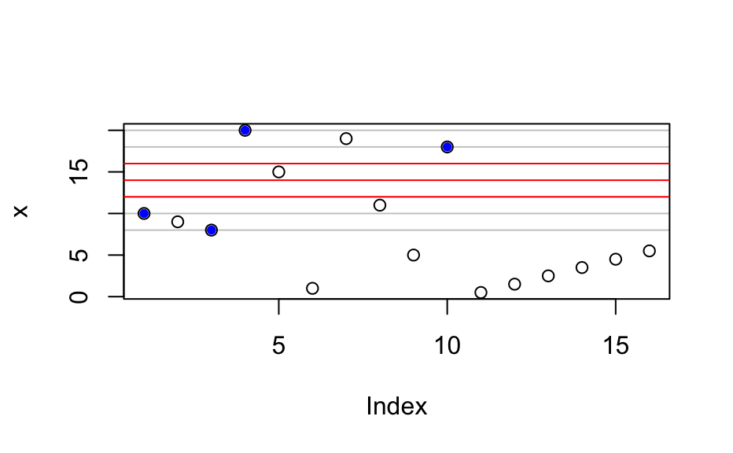
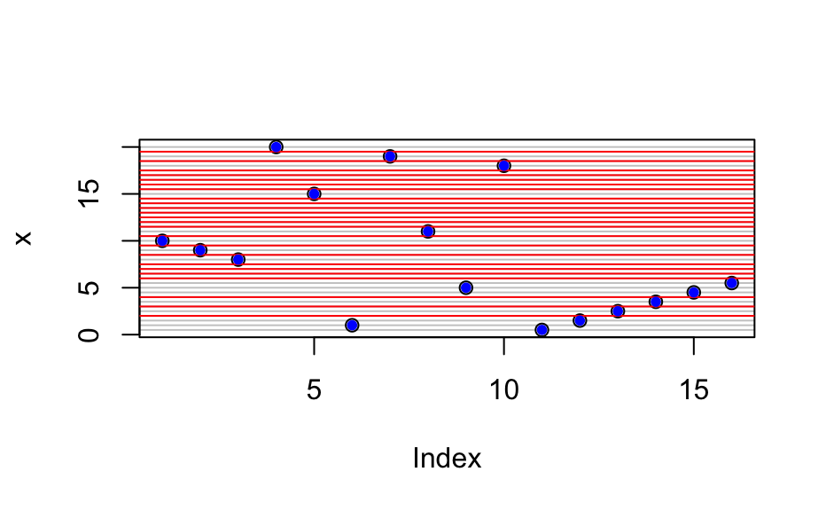

makeraster() fits the data to the specified raster.
fitraster() tries different raster parameter and returns the raster that covers most of the
x values: The differences between the values of x are calculated (possible step
sizes). For each of those step sizes, different points are tried (until all points have been
covered by a raster) and the parameter combination leading to the best coverage (i.e. most points
on the grid) ist used.
Note that only differences between the sorted values of x are considered as step size.
makeraster(x, startx, d, newlevels, tol = 0.1) fitraster(x, tol = 0.1)
Arguments
| x | numeric to be fitted with a raster |
|---|---|
| startx | starting point ("origin") for calculation of the raster |
| d | step size of the raster |
| newlevels | levels of the raster |
| tol | tolerance for rounding to new levels: elements of x within |
Value
list with elements
the values of x, possibly rounded to the raster values
the values of the raster
Author
Claudia Beleites
Examples
#> $x #> [1] 10.0 9.0 8.0 20.0 15.0 1.0 19.0 11.0 5.0 18.0 0.5 1.5 2.5 3.5 4.5 #> [16] 5.5 #> #> $levels #> [1] 8 10 12 14 16 18 20 #>## points acutally on the raster onraster <- raster$x %in% raster$levels points(which(onraster), raster$x[onraster], col = "blue", pch = 20)raster <- fitraster(x) raster#> $x #> [1] 10.0 9.0 8.0 20.0 15.0 1.0 19.0 11.0 5.0 18.0 0.5 1.5 2.5 3.5 4.5 #> [16] 5.5 #> #> $levels #> [1] 0.5 1.0 1.5 2.0 2.5 3.0 3.5 4.0 4.5 5.0 5.5 6.0 6.5 7.0 7.5 #> [16] 8.0 8.5 9.0 9.5 10.0 10.5 11.0 11.5 12.0 12.5 13.0 13.5 14.0 14.5 15.0 #> [31] 15.5 16.0 16.5 17.0 17.5 18.0 18.5 19.0 19.5 20.0 #>## points acutally on the raster onraster <- raster$x %in% raster$levels points(which(onraster), raster$x[onraster], col = "blue", pch = 20)#> $x #> [1] 7.00 18.00 6.00 10.00 1.00 13.00 2.00 19.00 14.00 4.00 0.45 1.45 #> [13] 2.45 3.45 4.45 5.45 #> #> $levels #> [1] 1 2 3 4 5 6 7 8 9 10 11 12 13 14 15 16 17 18 19 #>## points acutally on the raster onraster <- raster$x %in% raster$levels points(which(onraster), raster$x[onraster], col = "blue", pch = 20)